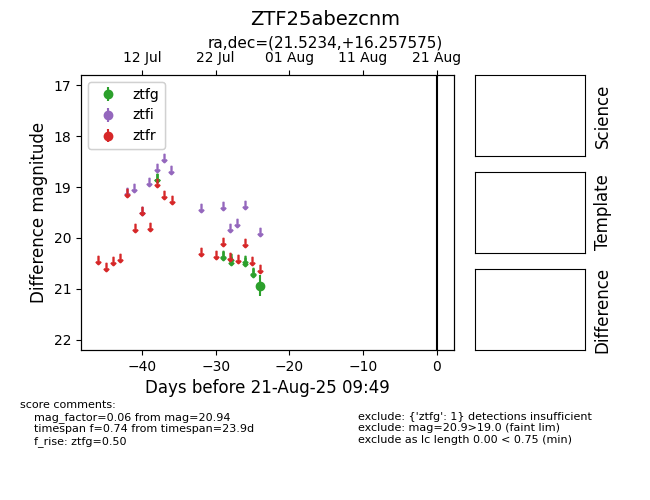

Target ZTF25abezcnm at 2025-08-21 09:49, see:
FINK: fink-portal.org/ZTF25abezcnm
Lasair: lasair-ztf.lsst.ac.uk/objects/ZTF25abezcnm
ALeRCE: alerce.online/object/ZTF25abezcnm
alt names
ZTF25abezcnm (ztf,alerce)
coordinates:
equatorial (ra, dec) = (21.5234,+16.25757)
galactic (l, b) = (134.9054,-45.80693)
photometry
last ztfg=20.94
1 ztfg detections
